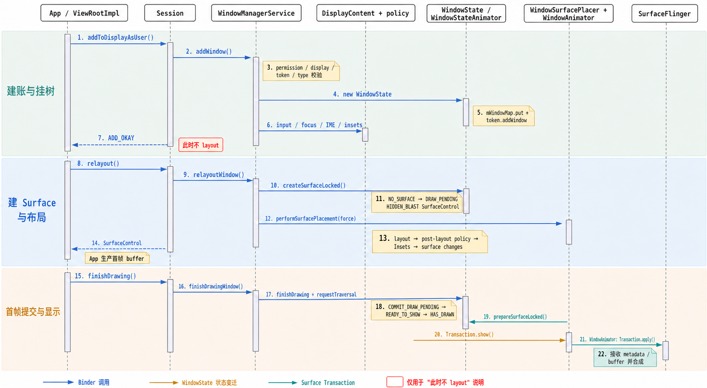
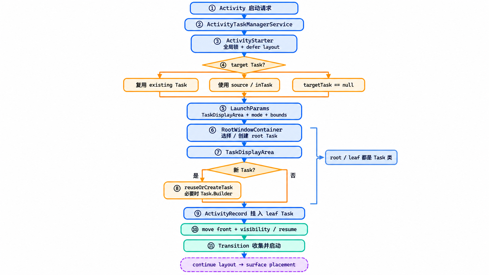
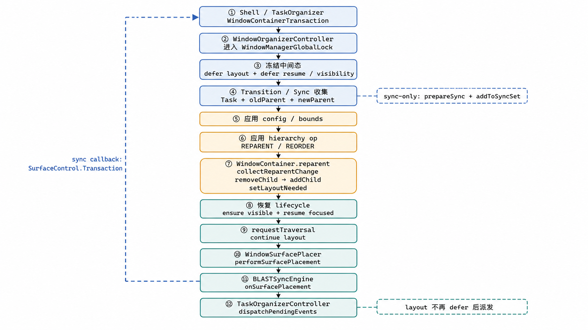
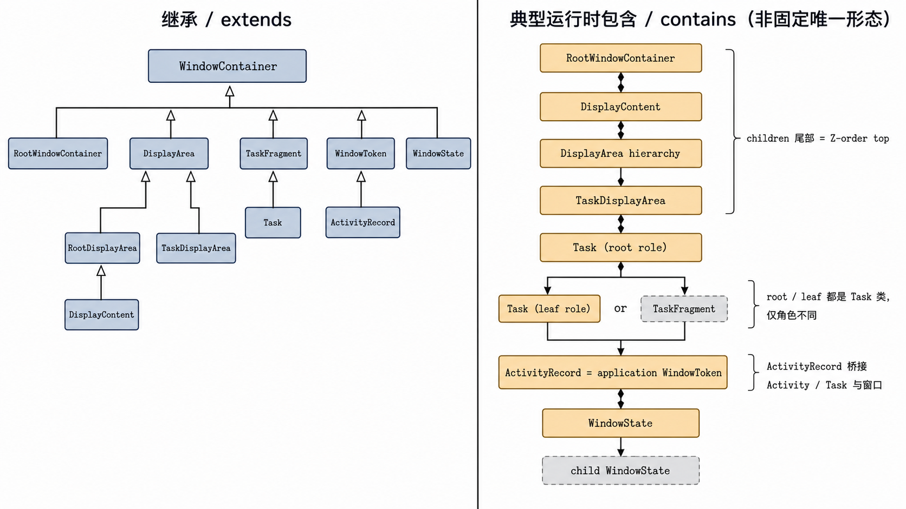

阅读边界与核心结论
frameworks/base 的 main，提交 1cdfff555f4a21f71ccc978290e2e212e2f8b168。文中行号、类关系与版本判断均绑定该提交。当前 WMS 不是一张“窗口列表”，而是一棵共享 WindowContainer 树 + 多组控制器 + 一条延迟提交管线。ATMS 决定 Activity/Task 的逻辑归属与生命周期，WMS 决定 WindowState 的布局、输入、焦点与 Surface；两者通过同一个 global lock 和同一个 RootWindowContainer 构成一个一致性域。
Display、Task、Activity token、Window 共用父子与 Z-order 语义。
Policy、Insets、Input、Lifecycle、Organizer、Transition 持续读写这棵树。
逻辑变化经 traversal、sync/transition 汇入 SurfaceControl.Transaction。
| 层次 | 关键对象 | 核心职责 |
|---|---|---|
| 服务入口 | WMS、ATMS、Session、WindowOrganizerController | Binder 入口、身份与权限、全局编排 |
| 逻辑树 | RootWindowContainer、DisplayContent、Task、ActivityRecord、WindowState | Display/Task/Activity/Window 的归属、顺序、配置与可见性 |
| 策略与派生状态 | DisplayPolicy、InsetsStateController、InputMonitor、TaskSupervisor | 系统窗口策略、Insets、输入窗口与 Activity 生命周期 |
| 帧与原子提交 | WindowSurfacePlacer、WindowAnimator、TransitionController、BLASTSyncEngine | layout/placement、动画帧、过渡收集与同步提交 |
| 图形对象 | WindowStateAnimator、SurfaceControl、Transaction | 窗口 layer 的创建、属性维护和 show/hide |
ActivityRecord → WindowState 和统一 traversal/transaction 上会合。Window 主线：从 WindowState 到首帧可见

关键类分工
| 类 | 服务端状态 | 首帧路径中的作用 |
|---|---|---|
Session | 调用进程 uid/pid、已添加窗口 | IWindowSession.Stub 薄代理，把 add/relayout/finishDrawing/remove 转给 WMS |
WindowManagerService | mWindowMap、global lock、Root、全局控制器 | 权限/token 校验、创建/查询 WindowState、协调全局派生状态 |
WindowState | attrs、client、Session、token、可见性、frame、children | 单窗口的服务端真值，同时是容器树节点 |
WindowStateAnimator | draw state、窗口 SurfaceControl、shown/alpha | 创建 BLAST layer，推进绘制状态，准备 show/hide |
DisplayPolicy | 系统栏/系统窗口与 decor/insets 规则 | add 时调整/校验参数，layout 时参与 post-layout policy |
InsetsStateController | Insets sources、controls、state | 计算和分发 Insets 状态 |
InputMonitor | InputWindowHandle 派生状态 | 更新可接收输入的窗口集合、焦点与 layer 顺序 |
WindowSurfacePlacer | traversal 请求、layout repeat | 在锁内把脏状态收敛到 Root/Display 的 surface placement |
WindowAnimator | 每 Display animator、当帧 transaction | 动画帧中 prepare surface，并 apply transaction |
阶段 1：addWindow 验证、建账、挂树
App 的 ViewRootImpl 首次 attach 先 requestLayout()，再通过 IWindowSession.addToDisplayAsUser() 进入 system_server；Session 直接代理到 WMS.addWindow()。
- policy add 权限、DisplayContent 与 display access 检查。
- 检查 client binder 是否已经存在于
mWindowMap。 - 解析 token/type；application window 的 token 必须能
asActivityRecord()。 - 创建
WindowState，由DisplayPolicy调整/校验 attrs，按需创建 input channel。 - 写入
mWindowMap，通过token.addWindow(win)挂入树；应用窗口的 token 通常就是 ActivityRecord。 - 更新 input windows、focus、IME target、layer 与 Insets 返回值。
ADD_OKAY 只代表 WMS 已接受并记录窗口，不代表它已有可见 Surface。阶段 2：relayoutWindow 创建初始隐藏的 BLAST layer
下一次 ViewRootImpl.performTraversals() 经 Session.relayout() 进入 WMS.relayoutWindow()。WMS 更新 attrs、requested size 和 view visibility；需要变为可见且尚无 Surface 时，createSurfaceControl() 调用 WindowStateAnimator.createSurfaceLocked()。
当前基线中，WindowStateAnimator 直接持有窗口的 SurfaceControl。创建时以 WindowState 的 container surface 为 parent，设置 HIDDEN 与 BLAST_LAYER，避免未完成绘制的内容提前泄漏。
WindowSurfaceController.java。源码中的 setCallsite("WindowSurfaceController") 只是遗留诊断字符串，不能据此把它画成当前真实类节点。阶段 3：surface placement 收敛派生状态
relayoutWindow() 强制 WindowSurfacePlacer.performSurfacePlacement()。placer 在 global lock 内进入 RootWindowContainer.performSurfacePlacement()；若执行期间又产生 layout 请求，会受限 repeat，而不是递归无穷重入。
DisplayContent.performLayout
→ post-layout policy
→ Insets post-layout
→ forAllWindows(applySurfaceChangesTransaction)
→ lifecycle / TaskOrganizer pending events
→ sync state这轮不只计算 frame。focus、wallpaper、IME、orientation、Insets、可见性、动画准备，以及 surface crop/position/layer，都可能根据同一棵树被重新派生。
阶段 4：finishDrawing 后才允许 show
App 提交首帧后，经 Session.finishDrawing() 调用 WMS.finishDrawingWindow()。WindowState 接受 post-draw transaction，WMS 标记 display layout needed 并请求下一轮 traversal。
NO_SURFACE
→ DRAW_PENDING
→ COMMIT_DRAW_PENDING
→ READY_TO_SHOW
→ HAS_DRAWNcommit draw 后仍需满足 Activity 可见、display ready 等条件；WindowState.performShowLocked() 才推进到 HAS_DRAWN。随后动画/placement 路径中的 prepareSurfaceLocked() 通过 transaction 对窗口 SurfaceControl 调用 show()。
源码：ViewRootImpl addWMS.addWindowrelayoutWindowcreateSurfaceLockedsurface placementfinishDrawingWindowperformShowLocked
Task 主线：复用、创建与前台化

入口与一致性边界
ATMS.startActivity() 归一化到 startActivityAsUser()，配置 ActivityStarter 并执行。ActivityStarter.execute() 在 resolve 后进入 ATMS global lock；startActivityUnchecked() 在关键区间 deferWindowLayout()，由 startActivityInner() 做目标选择和改树，最后 continueWindowLayout()。
global lock 防止树被并发破坏，defer layout 防止事务中间态外泄。例如 Activity 已离开旧 Task、尚未接到新 Task 的瞬间，不应触发一次真实布局。
目标选择是三段决策，不是直接 new Task
resolveReusableTask()根据 launch mode、flags、intent/document 语义寻找可复用的已有 Activity/Task。- 没有 reusable target 时，
computeTargetTask()根据显式inTask、source Activity/Task、FLAG_ACTIVITY_NEW_TASK等决定目标。NEW_TASK 且没有显式/来源 Task 时返回null，表达“需要新 Task”。 computeLaunchParams()推导 preferred TaskDisplayArea、windowing mode 与 bounds；RootWindowContainer.getOrCreateRootTask()再按 options、LaunchParams、candidate/source task、默认 display area 的优先级选择或创建 root Task。
TaskDisplayArea.getOrCreateRootTask() 也不会无条件 new：它可以复用兼容 root Task，把 candidate Task reparent 到合适父节点，或者才用 Task.Builder 新建 root Task。
leaf Task 的复用/创建与 Activity 接入
确实需要新 Task 时，ActivityStarter.setNewTask() 调用 rootTask.reuseOrCreateTask()：root Task 在条件允许时可自己兼任 leaf；否则分配新 taskId 并用 Task.Builder 建 child Task，然后把 ActivityRecord add/reparent 进去。
前台化、resume 与 transition
Activity 接入后，ActivityStarter 按条件把 root Task 移到前台，调用 resumeFocusedTasksTopActivities() 并更新 RecentTasks；可见性和 lifecycle 继续由 RootWindowContainer、Task、TaskFragment 沿树驱动。
成功启动同时把 Activity/Task 的 existence、order、visibility change 收集进 Transition，最终经 TransitionController.requestStartTransition() 请求 Shell transition。Transition 不决定 Activity 属于哪个 Task；它组织已确定或正在收集的逻辑变化怎样从旧视觉状态切到新视觉状态。
源码：ATMS.startActivitystartActivityUnchecked目标选择root Task 选择reuseOrCreateTask启动 Transition
Task 变更：WCT、reparent 与同步提交
分屏、desktop/freeform 与 Shell organizer 大量通过 WindowContainerTransaction 批量修改 bounds、windowing mode、reparent、reorder 或 remove。其核心不是“执行很多 setter”，而是让中间态不可见，再统一恢复派生计算。

事务入口与三种 defer
WindowOrganizerController 是 WindowOrganizer 的 system_server 端实现。applyTransaction() 和 applySyncTransaction() 都进入 global lock；sync 版本还由 BLASTSyncEngine 聚合参与容器的结果，并回调最终 transaction。
deferWindowLayout
beginDeferResume
defer root visibility update
→ apply container configuration changes
→ apply hierarchy ops
→ ensureActivitiesVisible / resumeFocusedTasksTopActivities
→ requestTraversal（按 effects）
finally
→ continueWindowLayout
→ endDeferResume
→ continue root visibility update三种 defer 各管一层：layout 阻断 Window/Display 几何与 surface 派生；resume 阻断 Activity lifecycle；root visibility 阻断跨 Task 可见性。只有分别冻结，外部才只会观察到 WCT 的整体结果。
reparent/reorder 的真实改树点
hierarchy op 先解析 token、校验目标 container 与操作类型。Task reparent/reorder 会先在 transition/sync 中收集 old parent、Task 和 new parent，再进入 Task-specific handler：
- 跨 TaskDisplayArea 或父 Task：调用对应
Task.reparent(...)； - 同一 parent 内换 Z-order：调用
positionChildAt(...)； - remove Task：进入 TaskSupervisor 的 removeTask/removeRootTask 路径。
最终通用 WindowContainer.reparent() 的关键顺序是：
collectReparentChange(this, newParent)；oldParent.removeChild(this)；newParent.addChild(this, position)；- 标记新旧 Display
layoutNeeded； - 触发 parent/display/sync 回调。
Organizer 事件为什么延后派发
TaskOrganizerController.dispatchPendingEvents() 在 layout 仍 deferred 时直接返回；RootWindowContainer 收敛一轮 surface placement 后才再次派发。这样 organizer 观察到的 Task info 尽量对应已完成布局派生的稳定状态，而不是事务中途的树形。
源码：WindowOrganizerControllerapply transactionTask hierarchy opWindowContainer.reparentpending events
三层一致性机制：锁、defer 与图形事务
窗口首帧、Activity 启动、WCT reparent 看似三套流程，底层依赖同一组一致性机制。
| 层 | 解决的问题 | 典型机制 |
|---|---|---|
| 内存模型一致性 | 不能并发破坏 WindowContainer 树、focus、lifecycle 等互相关联状态 | WindowManagerGlobalLock |
| 批处理可观察性 | 复杂操作中的短暂中间态不应触发 layout/resume/organizer 回调 | deferWindowLayout、beginDeferResume、defer root visibility |
| 屏幕呈现原子性 | 多个 layer 的几何、可见性与层级应作为一次过渡/同步结果提交 | Transition collect、BLASTSyncEngine、SurfaceControl.Transaction |
Binder / 内部事件
→ global lock 内修改 WindowContainer 真值
→ 标记 layout / visibility / config / transition effects
→ traversal 收敛 Display / Window 派生状态
→ sync / transition 组织多个参与者
→ AnimationThread / transaction applyrequestTraversal() 不是“立刻重画”，而是声明容器树的派生状态已经脏，需要在合适时点收敛。多次 request 也不必然对应多次屏幕提交；placer 会合并、延后，并在必要时有限 repeat。
SystemServer 启动与对象接线
启动顺序揭示了依赖方向：ATMS 先提供 Task/Activity 控制域和 global lock，WMS 后构造 Window/Display 控制域，再通过一次交叉接线合并为统一 Root。
startBootstrapServices()先启动ActivityTaskManagerService.Lifecycle，取得 ATMS 与 global lock。- ATMS 创建
WindowOrganizerController；它再持有TaskOrganizerController与TransitionController等。 startOtherServices()调用WindowManagerService.main(..., atm, ...)；WMS 在DisplayThread上同步构造并注册成windowBinder service。- WMS 创建
WindowAnimator、RootWindowContainer、BLASTSyncEngine与WindowSurfacePlacer。 AMS.setWindowManager(wm)委托ATMS.setWindowManager(wm)；ATMS 的mRootWindowContainer直接指向wm.mRoot，lifecycle、TaskSupervisor、Transition 等由此接入同一 Root。- 后续依次进入
onInitReady()、displayReady()、systemReady()；displayReady 会让 WindowAnimator ready 并初始化/重配 Display。
DisplayThreadAMS/ATMS
setWindowManageronInitReadydisplayReady / systemReady
要区分构造线程与持续工作线程：WMS 在 DisplayThread 构造；surface animation frame callback 运行在 AnimationThread，在 global lock 内执行 animate()，最后应用当帧 SurfaceControl.Transaction。
关键类图：继承关系与运行时包含关系

DisplayArea.Dimmable 辅助继承层。WindowContainer 提供统一语法
WindowContainer<E> 保存 parent、按 Z-order 排列的 children、container SurfaceControl、pending transaction 与 SurfaceAnimator。children 尾部是 Z-order 顶部，许多从顶到底的查找因此反向遍历。
- Display 分支：
RootWindowContainer → DisplayContent → DisplayArea hierarchy → TaskDisplayArea。 - Task 分支：
TaskFragment → Task；Task 既能容纳 Activity，也能容纳 child Task。 - Token 分支：
WindowToken → ActivityRecord；ActivityRecord 本身就是 application window token。 - Window 分支：
WindowState也是WindowContainer<WindowState>，因此可挂 child window。
Display 侧的精确继承链
DisplayContent
→ RootDisplayArea
→ DisplayArea.Dimmable
→ DisplayArea
→ WindowContainerDisplayArea.Dimmable 只增加 Dimmer 能力。DisplayContent 初始化时还会创建 InsetsStateController、DisplayPolicy、InputMonitor，并通过 DisplayAreaPolicy 构造运行时 DisplayArea hierarchy。图中的“DisplayArea hierarchy”因此不是单个固定类。
ActivityRecord 是 Task 与 Window 的桥
ActivityRecord extends WindowToken 是整个模型的枢纽：向上，它作为 Activity 历史记录被 Task/TaskFragment 管理；向下，它作为 application window token 直接承载 WindowState。Task 的 bounds、visibility、transition 或 reparent 变化于是可以沿同一棵树下传到窗口。
Task，只是树中角色不同；TaskFragment 也不是每条运行时路径的必经层。源码：WindowContainerDisplayArea.DimmableDisplayContent 初始化TaskDisplayAreaActivityRecord
窗口移除：立即清理与 remove-on-exit
App detach 时，Session.remove(clientToken) 进入 WMS.removeClientToken()，查到 WindowState 后调用 removeIfPossible()。
或立即清理focus/layout
重新派生
removeIfPossible() 先释放 input channel，再判断是否有 surface、是否允许动画、窗口是否可见/已显示、当前是否处于 display transition。适合 exit animation 时置 mAnimatingExit/mRemoveOnExit，等动画完成后再真正删除；否则立即进入 removeImmediately()。
removeImmediately() 先销毁 WindowStateAnimator 持有的 surface——它相当于一个“虚拟 child”——再走 WindowContainer 父子清理，移除 policy/input 状态，最后由 postWindowRemoveCleanupLocked() 清 mWindowMap、IME、focus、overlay 等全局账目并触发布局更新。
源码：Session.removeremoveClientTokenremoveIfPossibleremoveImmediately
App 与 SurfaceFlinger 边界
发起 add、relayout、finishDrawing、remove，并向 Surface 生产 buffer。
持有服务端树和 SurfaceControl，决定 layer 在哪里、何时允许可见。
接收 layer/buffer 与事务，完成最终合成并送到物理显示。
App 一侧
App 通过 WindowManagerGlobal 打开 IWindowSession；ViewRootImpl 持有 client IWindow，发起窗口生命周期请求。WMS 不替 App 绘制 View 内容，而是返回 Surface 相关句柄、frame、Insets 与 config 等约束，App/RenderThread 负责生产 buffer。
SurfaceFlinger 一侧
WMS 持有 SurfaceControl，控制 layer 的 parent、position、crop、alpha、layer、show/hide 等元数据；App 向对应 Surface 生产 buffer。SurfaceFlinger 接收 layer/buffer 与 transaction，执行最终合成与显示。
资料：WindowManagerGlobal.openSessionAOSP：SurfaceFlinger 与 WindowManager
源码阅读与调试地图
推荐按依赖建立顺序阅读，而不是从一万多行的 WMS 文件顺序向下扫：
- 启动接线：
SystemServer→ActivityTaskManagerService.setWindowManager()→ WMS 构造。 - 容器语法：
WindowContainer→RootWindowContainer→DisplayContent/DisplayArea/TaskDisplayArea。 - Task 语义：
TaskFragment→Task→ActivityRecord→ActivityStarter。 - Window 语义：
WindowToken→WindowState→WindowStateAnimator。 - 首帧路径：
Session→addWindow/relayoutWindow/finishDrawingWindow→WindowSurfacePlacer→WindowAnimator。 - 现代组织与过渡：
WindowOrganizerController→TaskOrganizerController→TransitionController→BLASTSyncEngine。
| 现象 | 优先检查的真值 |
|---|---|
| 归属、层级或顺序错误 | WindowContainer parent/children、TaskDisplayArea、Task reparent、Transition collect |
| 几何、Insets 或输入错误 | DisplayContent layout、DisplayPolicy、InsetsStateController、InputMonitor |
| 窗口存在但不显示 | token/visibility → draw state → Activity 可见性 → surface shown → transition/sync 等待状态 |
| remove 后仍短暂存在 | mAnimatingExit、mRemoveOnExit、display transition、surface destroy 时点 |
最终心智模型：ATMS/WMS 在同一把锁和同一棵 WindowContainer 树上决定 Task、Activity、Window 的逻辑真值；placement、Transition 与 BLAST sync 把真值转成成组 SurfaceControl 变化，App 填充 buffer，SurfaceFlinger 负责最终合成。